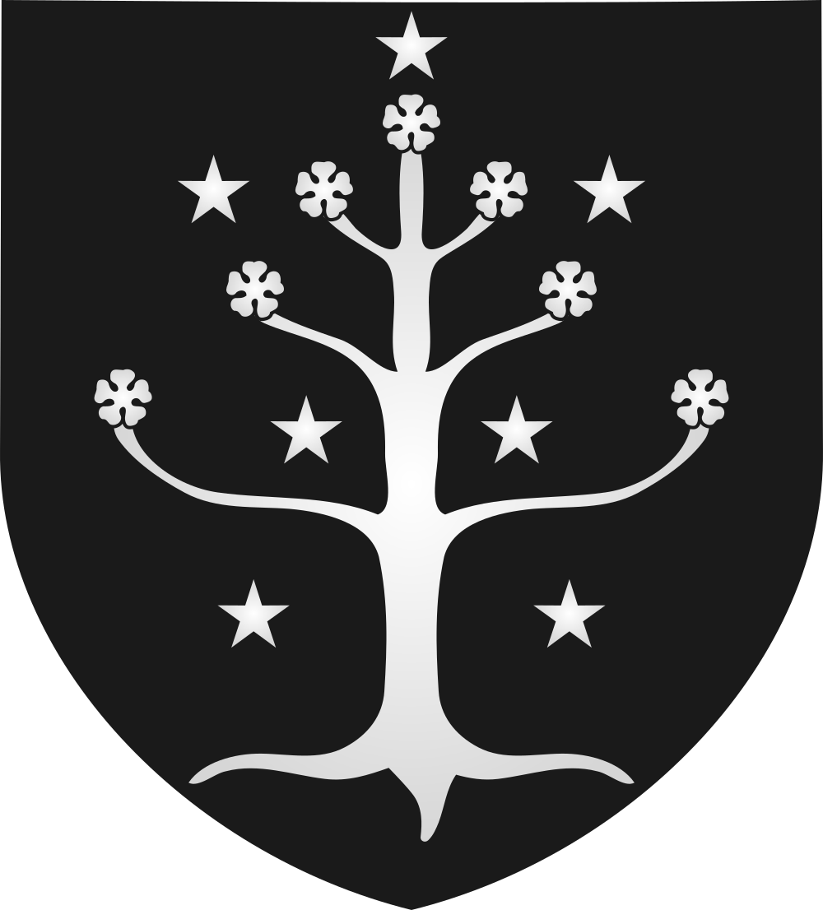

Cirion
House of Húrin (Stewards)
House of Húrin (Stewards) (–T.A. 2567)
Open the full record in the living archive →Part of the Arda Archive — a corpus-first index of Tolkien's legendarium; every fact cited, every silence declared.

House of Húrin (Stewards)

House of Húrin (Stewards)
House of Húrin (Stewards) of Gondora
–T.A. 2567b
The Oath of Eorl; gave Calenardhon to the Éothéod, T.A. 2510c
GENERATED. Ideogram V3, driven by a prompt written in this archive; no illustrator drew it and it must never be presented as though one had. Ruling 3 asks for the hand and this IS the hand -- 'generated' is an answer, 'unknown' would not be.d
“12 Cirion born 2449 lived 118 years died 2567”e
“of fragments, as in ‘Cirion and Eorl’, but a primary strand in the history of Middle-earth that”f
“‘So it came to pass in the days of Cirion the Twelfth Steward (and”g
a The text — LotR App A I; HoME XII, The Heirs of Elendil [C]
b The text — [I-H]
c The archive's reading — [I-H]
d The ruling — the owner's ruling of 13 August 2026, on the 552 generated images: 'we are free to use them'. That settles the LICENCE and does not settle the HAND, which is recorded above as what it is. [C]
e The text — The Peoples of Middle Earth · l.6720 [C]
f The text — Unfinished Tales of Numenor and Middle Earth · l.145 [C]
g The text — The Lord of the Rings · l.30508 [C]

The name stands in 297 cited lines, in 38 of the corpus's 192 texts — most often in Unfinished Tales of Numenor and Middle Earth (70), The Lord of the Rings a Reader's Companion (47), Vinyar Tengwar 41 50 (27).h
21 cited lines stand in 3 volumes of the drafts and 84 in 4 of the published books — the published text carries it more often than the drafts did.i
Field of Celebrant (7), Fords of Isen (3), Gladden Fields (3), Dol Amroth (2).j
Gondor (48), Rohan (24), Rhûn & the Easterling powers (7), The Éothéod (3).k
h Counted — site/arda_apparatus.json [C]
i Counted — site/arda_apparatus.json [C]
j Counted — site/arda_apparatus.json [C]
k Counted — site/arda_apparatus.json [C]

“Vanda sina termaruva Elenna·nóreo alcar enyalien ar Elendil Vorondo voronwë. Nai tiruvantes i hárar mahalmassen mi Númen ar i Eru i or ilyë mahalmar eä tennoio. And again he said in the Common Speech: This oath shall stand in memory of the glory of the Land of the Star, and of the faith of Elendil the Faithful, in the keeping of those who sit upon the thrones of the West and of the One who is above all thrones for ever.”l
“lost’; Aerennil non cirion ‘Earendil was a mariner’.” — the name is near this line and the archive does not assert that it is this record.m
of House of Húrin (Stewards); in Gondor; child of Boromir (the Steward); father or mother of Hallas; –T.A. 2567.n
l The passage — Unfinished Tales of Numenor and Middle Earth · l.9609 [C]
m The line — Gateway to Sindarin · l.5991 [EXT]
n The table — LotR App A I; HoME XII, The Heirs of Elendil [C]
Eorl the Young (127), Hador (7), Hallas (4), Isildur (3) — a shared line is a fact about the line, not a claim that the two met.o
counted from corpus lines that name BOTH records. A shared line is a fact about the line, not a claim that the two met; `eg` names a line a reader can open. [C]
Cirion is Neo-Sindarin.p
a marginal hand recording a change to this record — searched over 59 verified notes in site/arda_hands.json, and nothing was found.q
recorded by-names for this figure — searched over 47 worked sets in site/arda_epithets.json, and nothing was found.r
o Counted — site/arda_apparatus.json [C]
p The lexicon — https://eldamo.org/content/words/word-2447898637.html [EXT]
q The search — site/arda_apparatus.json [C]
r The search — site/arda_apparatus.json [C]
House of Húrin (Stewards) (–T.A. 2567)
Open the full record in the living archive →